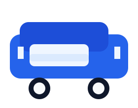

Intercity Taxi
Regular Chandigarh to Manali runs, with optional pickups from nearby cities.
Trusted routes
Choose a service that fits your travel needs in the Himalayan region. Clear pricing, comfortable vehicles, and warm local support.

Regular Chandigarh to Manali runs, with optional pickups from nearby cities.
Day trips to Kullu, Naggar, Rewalsar, and other nearby attractions.
Flexible itineraries for family groups, honeymooners, and adventure travelers.